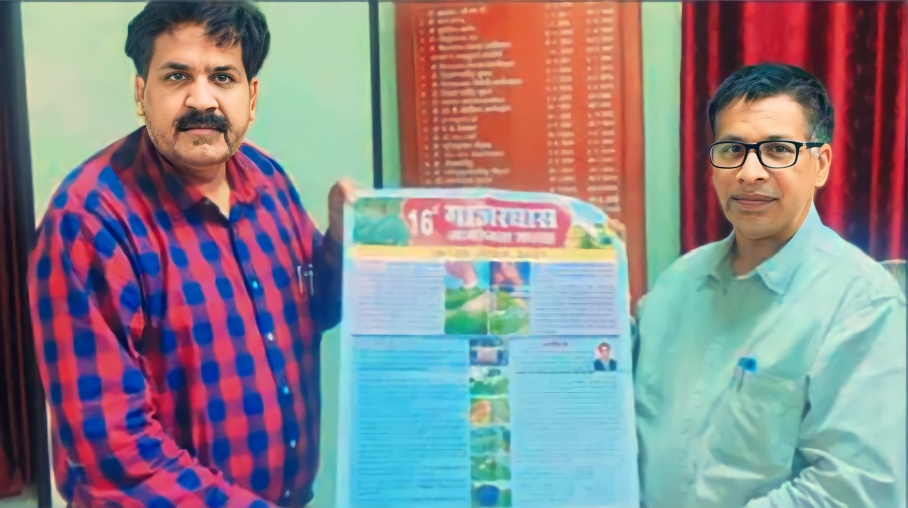

पत्रिका न्यूज नेटवर्क patrika.com
उज्जैन. विक्रम विश्वविद्यालय की हिंदी अध्ययनशाला द्वारा कविवर पद्मभूषण डॉ. शिवमंगलसिंह सुमन की जयंती पर विशिष्ट परिसंवाद का आयोजन किया गया। यह परिसंवाद डॉ. सुमन के व्यक्तित्व एवं साहित्यिक अवदान पर केंद्रित था। परिसंवाद में डॉ सुमन पर अपने विचार व्यक्त करते कुलपति परिसंवाद की अध्यक्षता विक्रम विवि के कुलपति प्रो. अखिलेश कुमार पांडेय ने की। मुख्य वक्ता वरिष्ठ साहित्यकार डॉ. प्रमोद त्रिवेदी एवं हिंदी विभागाध्यक्ष प्रो. शैलेंद्र कुमार शर्मा थे।
पत्रिका न्यूज नेटवर्क patrika.com
उजैन, विक्रम विश्वविद्यालय द्वारा भारतीय कृषि अनुसंधान परिषद, खरपतवार अनुसंधान निदेशालय, जबलपुर के सौजन्य से 16वैं गाजर घास जागरुकता सप्ताह का आयोजन 16 से 22 अगस्त तक कियां जाएगा।

इस आयोजन के लिए जागरुकता पोस्टर एवं प्रचार-प्रसार सामग्री कुलपति प्रो. अखिलेश कुमार पांडे द्वारा प्रसारित की गई।भास्कर एक्सक्लूसिव विक्रम विश्वविद्यालय में इसी सत्र से कृषि संकाय में बीएससी ऑनर्स की होगी शुरुआत बिना पीएटी मिलेगा प्रवेश, क्लास में पढ़ाएंगे बीएससी एग्रीकल्वर ऑन्र्स खेत, खलिहानों में करवाएंगे प्रैक्टिकल, चार साल का रहेगा नया कोर्स
11वीं और 12वीं में बायोलॉजी विषय है तो ऐसे विद्यार्थियं के लिए खुशखबर है। उनके लिए किक्रिम विश्वविद्यालय ने इसी सत्र से बीएससी एग्रीकल्चर ऑनस्स शुरू कर दिया है। इस कोस्स के लिए अब शहर से बाहर जाना पड़ता था लेकिन अब ऐसा नहीं होगा। कुलपति का कहना है कि इसे वर्ष बिना पीएटी (प्री-एग्रीकल्चर टेस्ट) विद्यार्थियों को सीधे प्रवेश दिए जाएंगे। इसके लिए विश्वविद्यालय स्तर पर कोई एंट्रेस एग्जाम भी नहीं रखी जाएगी पहले आओ पहले पाओ के आधारपर मैरिट लिस्र बनाई जाएगी।
WEBINAR ORGANISED BY VIGYAN BHARATI
British rule caused the greatest damage to our ed- ucation, science and scien- known as VishW Cu before British rule and Britons atcked o ie thinking rom 1200 1947 to shake our sclentific and cultural foundatlonk how Bs Prof PC Ray and Prof. JC Bose continuously wark to propagate science and a sclentific tempera Iy patriotic and con tributed immensely to In- ruggle for Inde
FP NEWS SERVICE
* Remember the sacrifices of the great heroes who brought freedom'
To commemorate the Am- rut Mahotsav of Independ- ence, Vikram University organised a mass National Anthem, cycle rally and street plays related to women's empowerment and patriotism on the Mad- hav Bhawan campus on Monday morning. Ad- dressing the mass National Anthem programme, V-C Prof. Akhilesh Kumar Pandey said, "Many un- known and unnamed mar- tyrs had dedicated their lives to liberate India.